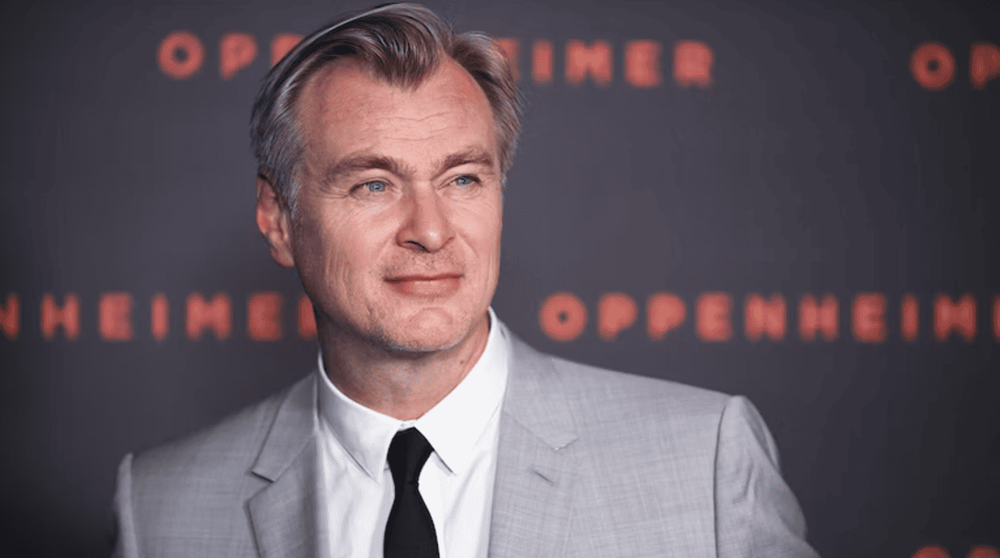

Christopher Nolan é um dos diretores mais renomados de Hollywood, conhecido por seu estilo inovador, narrativa envolvente e uso criativo de técnicas cinematográficas. Ele nasceu em Londres, Inglaterra, em 30 de julho de 1970. Nolan começou sua carreira como cineasta com curtas-metragens e estreou com o longa "Following" em 1998. No entanto, foi com "Amnésia" (2000) que ele ganhou destaque mundial. O filme, que aborda a memória e o esquecimento de maneira não linear, trouxe uma nova perspectiva para o gênero de thriller psicológico e estabeleceu Nolan como um diretor a ser observado.

Outros Trabalhos Notáveis
"Memento" (2000): Um thriller psicológico inovador que explora a história de um homem com perda de memória que tenta encontrar o assassino de sua esposa. A narrativa é apresentada em uma ordem não linear, um estilo que se tornou uma marca registrada de Nolan.
Trilogia "Batman" (2005-2012): Nolan revitalizou a franquia do homem-morcego com "Batman Begins" (2005), "O Cavaleiro das Trevas" (2008) e "O Cavaleiro das Trevas Ressurge" (2012). Esses filmes foram aclamados tanto pela crítica quanto pelo público, oferecendo uma abordagem mais sombria e realista ao super-herói, além de explorarem temas profundos como a justiça, moralidade e identidade.
"A Origem" (2010): Um thriller de ficção científica que segue um grupo de ladrões que invadem a mente de seus alvos para roubar segredos corporativos. O filme é elogiado por sua complexa narrativa, efeitos visuais e ambiciosa exploração da manipulação da realidade.
"Interestelar" (2014): Um épico de ficção científica que aborda temas de amor, sobrevivência e o futuro da humanidade. O filme segue um grupo de exploradores espaciais em uma jornada para salvar o planeta Terra através de um wormhole. A combinação de teorias científicas reais com uma narrativa emocionalmente potente é uma marca registrada de Nolan.
"Dunkirk" (2017): Um drama de guerra que retrata a evacuação de soldados aliados das praias de Dunkirk, na França, durante a Segunda Guerra Mundial. O filme é aclamado por seu realismo e estilo visual, usando uma abordagem não linear e uma trilha sonora envolvente para contar a história.